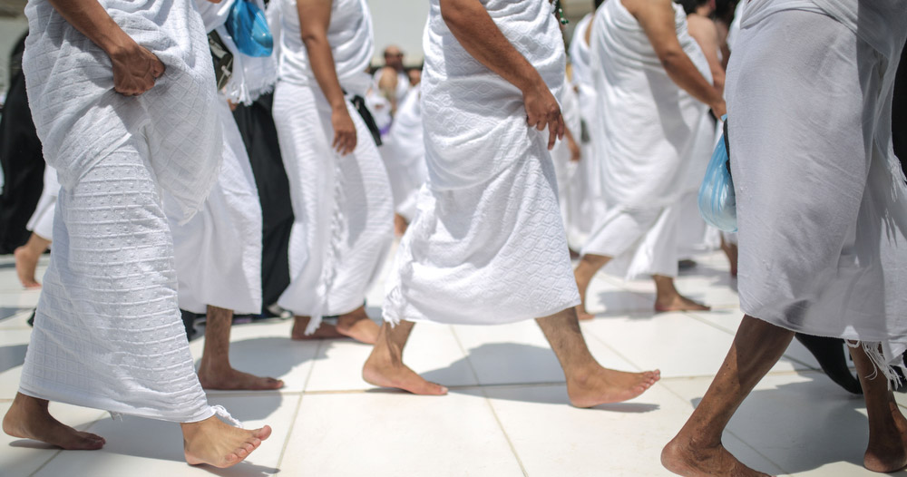
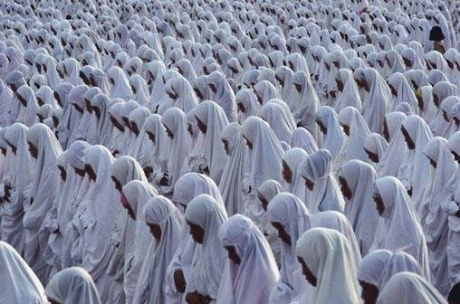

Ihram For Men
- Prepare two pieces of plain white cloths which are without any hems, seams or buttons. The wraparound is called the Izar and the robe is called Rida’.
- Wrap the Izar around the waist covering the area between the navel and feet.
- Fasten the belt or clips around the Izar to avoid it slipping off.
- Hold the Rida’ horizontally behind your back like wearing a cape and bring the left top end over your shoulder towards your right armpit.
- Bring the other end from below your right armpit towards over your left shoulder. Your entire left shoulder area should be completely covered, with your right shoulder bare.
- Tie or clip the ends behind your back to secure it. The Rida would be big and wide enough to go across your back.
- Opt for footwear that reveals the ankles and toes.

Ihram For Women
- Wear loose fitting clothing/robe that covers the whole body except for the hands and face that should remain exposed.
- The clothing/robe can have seams and buttons but should be free of adornments and recommended to be in white or black.